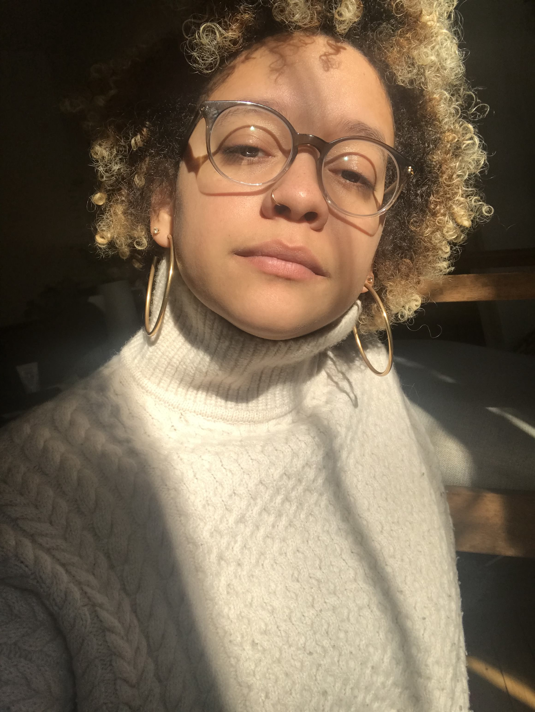

I'm Chelsea.
A native New Yorker and and marketing strategist. I have a lot of interests, but a few of the things I enjoy the most are community building, brand marketing, fostering cats, hosting dinner parties, and learning what makes people tick.I work on a lot of projects, and you’ll rarely find me without both a 9-5 and a 5-9. I’ve worked in various mediums in marketing getting my start at PHD with the paid search and social team for HBO, Bleecker Street Media, and Old Navy. I also helped build the email marketing strategy for Splacer, the tech start-up, and lead the experiential marketing efforts for the North American market at Devialet, the leader in the sound technology world. I also started a print newspaper called HANDS that was a voice of the local NYC community. Volume 1 ran through 2018. Also, and possibly most close to my heart is the women’s community group, The Retreat, that is re-establishing female bonds and fostering authentic connections. Like I said, I like connecting people, but moreover I love being able to build brands from the ground up. Talk to me about it.
I also like making content and coffee.